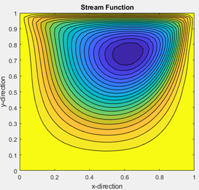

CFD Programming Project
Developed during ME543 — Computational Fluid Dynamics at IIT Guwahati, this project implements numerical solvers written from scratch in C and MATLAB for classic CFD problems.
2D transient heat conduction
A simulation of how heat spreads through a rectangular metal plate over time, using an explicit finite-difference method. The solver computes temperature at every grid point and time step, producing a smooth animation of the entire transient process.
The plate starts cold and gradually reaches steady state as heat enters from the top and bottom surfaces at fixed temperatures — visualising the physical beauty of thermal diffusion.
Transient temperature evolution in a rectangular plate.
Lid-driven cavity flow
A classic CFD benchmark modelling fluid trapped inside a square cavity. The top lid slides horizontally while the other walls stay fixed, creating a circulating vortex.
Implemented using the vorticity–stream-function formulation, the solver captures the main vortex and smaller corner eddies as the flow develops toward steady state.

Flow evolution and streamline plot (Re = 400) showing primary and secondary vortices.
1D wave propagation
A one-dimensional wave simulation showing how signals travel and decay over time, solved using multiple numerical schemes — Upwind, Lax and MacCormack.
Two wave types were tested — a sharp step pulse and a smooth sine wave — to compare stability and numerical diffusion across schemes under identical conditions.
Step-wave propagation (\(C_0 = 0.6\)).
Sine-wave propagation (\(C_0 = 0.6\)).